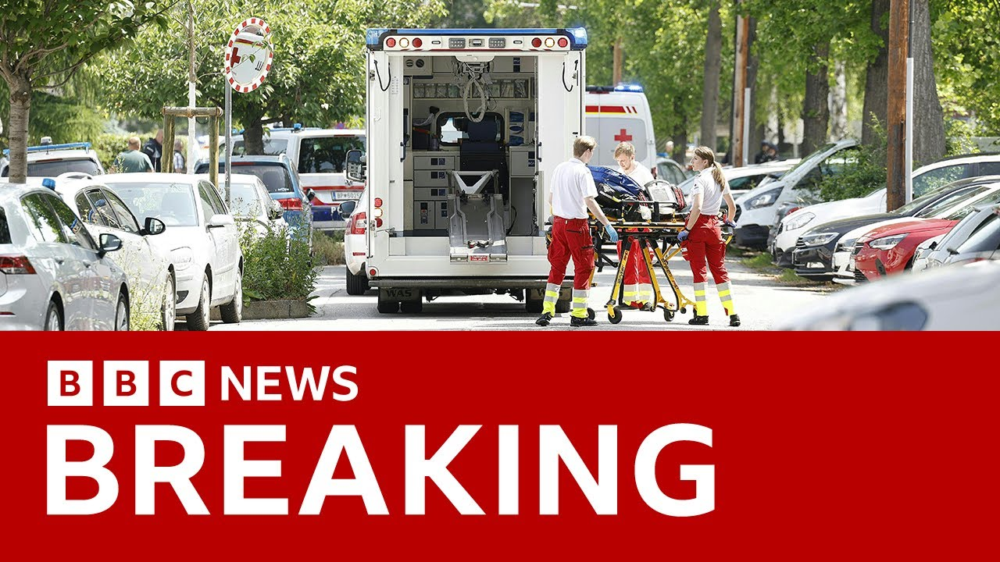

【奥地利一学校发生枪击事件致多人死亡 | BBC新闻】
Summary: Breaking news from Austria: Local media and police report that an attack occurred at a school in the southern part of the country, resulting in multiple deaths. Police have confirmed that several people were killed in the incident. Reporter Bethany Bell is on her way to the scene.
摘要： 奥地利突发新闻：当地媒体和警方报告称该国南部一所学校发生袭击事件，造成多人死亡。警方已确认此次袭击中有多人遇难，记者贝瑟尼·贝尔正赶往现场。

⏱️ Estimated Reading Time: 4 min
📚 六级生词 📚 雅思生词 📚 托福生词 📚 专八生词 📚 SAT生词 📚 考研生词 📚 GRE生词 📚 高考生词 📚 视频里的生词
And return to our breaking news from Austria uh where local media and the police are reporting several people killed in an attack on a school in the south of the country.
回到我们从奥地利发回的突发新闻，当地媒体和警方报告称该国南部一所学校发生袭击事件，造成多人死亡。
Well, police have confirmed that several people have been killed in this attack.
警方已确认此次袭击中有多人遇难。
Our correspondent Bethany Bell is on the way to the scene and she gave us this update.
我们的记者贝瑟尼·贝尔正赶往现场并提供了最新情况。
What the police have said officially so far is that at around 10:00 local time, uh they started an operation around a secondary school in the southern town of Gratz.
警方官方目前表示，当地时间约10点，他们在南部城市格拉茨的一所中学附近展开了行动。
Um and uh they according to media reports shots had been heard from the school.
据媒体报道，学校内传出了枪声。
Um the uh interior ministry uh says that there appeared to be a number of dead people including uh the person who carried out the attack.
内政部表示，现场有多人死亡，包括袭击者本人。
Um the Austrian Broadcasting Corporation reports that uh a police spokesman says that he appears to have killed himself.
奥地利广播公司报道称，警方发言人表示袭击者似乎已自杀。
Um the reports we're getting is that there are a number of um people who are badly injured including both pupils and teachers.
我们收到的报告显示，有多人重伤，包括学生和教师。
And Bethany, uh, tell us a little bit about the police operation.
贝瑟尼，请简要介绍一下警方的行动。
I understand that's still ongoing in the area.
据了解，行动仍在进行中。
Yes. Uh, apparently what we understand is that they're evacuating the school building.
是的，据我们了解，警方正在疏散校内人员。
Uh, um, there are a lot of, um, police forces there, including special units.
现场部署了大量警力，包括特种部队。
Um, and the police have asked all people around about to avoid the school and to um, obey the um, advice of the security forces.
警方要求周边民众远离学校并听从安全部队的指示。
uh that this is a a large police um operation we're told in Gratz with a number of dead feared
据悉，格拉茨正展开大规模警方行动，恐有多人死亡。
and just just to give us an idea of um this the area I mean Gratz's quite a quite a big city a very big city in Austria south of Vienna
格拉茨是奥地利维也纳以南的一座大城市。
and this is a a a big uh secondary school we understand in the uh Da Shutseng
据了解，事发地点是达舒岑区的一所大型中学。
and uh this is uh we understand that according to these media reports it was a school um a pupil at the school who appears to have uh shot in the school.
据媒体报道，袭击者疑似是该校一名学生。
And since we spoke to Bethany, police have said that have confirmed that several people have been killed in that school shooting.
与贝瑟尼通话后，警方确认此次校园枪击事件中有多人死亡。
We've had um a spokesperson talking a little while earlier, let me bring you what he said.
稍早前一位发言人发表了声明，以下是他的讲话内容。
He said, "We cannot confirm or yet determine whether we're talking about one attacker or more at this point, but we can say that the situation is now under control and there's no further danger to the public.
他表示：“目前无法确认袭击者人数，但局势已得到控制，公众无进一步危险。
The school kids have been evacuated and are taking refuge nearby.
学生已被疏散并在附近避难。
Parents also have a gathering point.
家长有指定集合点。
Uh there are crisis management teams at both locations to help people even for those who haven't been physically harmed.
两地均设有危机管理团队，为包括未受伤者在内的民众提供帮助。
Uh but still there are several fatalities."
但仍有数人遇难。”
So police confirming several fatalities in that school shooting in Gratz in southern Austria.
警方确认奥地利南部格拉茨校园枪击事件造成多人死亡。